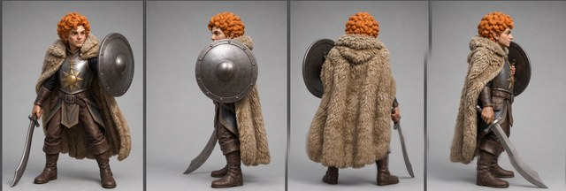
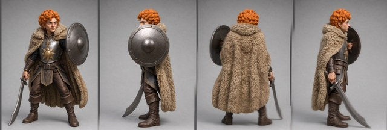
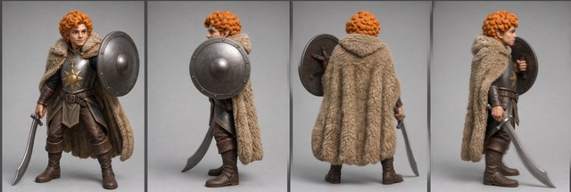

Trumbert — Round 7 ghosting investigation runbook
📋 Review panel — at round closeBase assets — what this round builds on
The source image(s) every generation in this round starts from. Click to zoom; open “inputs” for the prompt and reference images that produced each one.




Goal
Find a reliable way to prevent or repair the ghosting in Trumbert's later turnaround panels without sacrificing view correctness or identity. First pin down detectors using existing Trumbert and weakly labelled Gorgon evidence; then test a small set of layout, divider and self-repair ideas.
The choices on the table
| Approach | What it tests | Why it is included |
|---|---|---|
| Local detector calibration | Strong-edge loss, widened edges, false double contours and divider integrity | Whole-panel sharpness misses local ghosting, especially R1-P4 |
| Reverse the 1×4 view order | Whether ghosting follows slots 3/4 or the back/sword views | Separates canvas position from view complexity |
| One bounded 2×2 trial | Whether Trumbert repeats Gorgon's bottom-row failure | Diagnostic only; 2×2 is not presumed better |
| Divider variants | No outer border; black dividers; thinner dividers | Tests whether divider treatment and figure ghosting move together |
| flash31 self-repair | Two ways of asking flash31 to remove its own ghosting | Quick test before escalating to isolated panel generation |
The existing three R6 sheets are the control; they are not regenerated merely to make the table symmetrical.
What we need from you
Approve, amend or reject the detector-first gate, the five fresh-generation cells (including one deliberately bounded 2×2 roll), the two self-repair prompt families, and the $1.50 maximum spend. Any detector disagreement on an unlabelled Gorgon crop will come back to you for a human label rather than being silently treated as ground truth.
Cost
Local calibration $0 + 9 screening calls $0.90 + 2 self-repairs $0.20 + up to 4 conditional repair/confirmation calls $0.40 → maximum ≈ $1.50 (15 flash31 calls).
Technical plan — detectors, prompts, matrices and commands (pipeline detail)
What changed going in
- Use ghosting as the umbrella term, while recording two subtypes separately: softness/smear and echo/double contour. Divider softness remains a third, separate sheet signal.
- Treat Gorgon as a partially labelled calibration corpus. Absence of a historic finding is not a negative label; consequential detector disagreements become blinded evidence crops for Dimitri.
- Keep flash31 1×4 as the prior. Gorgon R8 showed systematic 2×2 bottom-row ghosting, although a clean R7x 2×2 proves the failure is not deterministic.
- Add template-tool support for explicit no-outer-border and line-colour options before generating E3–E5; dimensions/background stay pixel-identical.
- Give E1 and E2 dedicated prompt variants. The R6 prompt hard-codes both a horizontal row and front/shield/back/sword order, so reusing it verbatim would contradict those experiments and confound the result.
Existing evidence and historical detector comparison
- All three Trumbert R6 rolls show P3/P4 ghosting plus softened D2/D3. The defects are patchy: cloak, shield, sword and boot edges can ghost while a nearby hard edge remains crisp.
- A preliminary 96 px sliding-window pass recovers the broad pattern. Relative to the sharper of P1/P2, P3's upper-tail edge score is 0.73–0.78 across the three rolls; P4 is 0.67–0.86. R1-P4 is the instructive aggregate miss.
- Gorgon's historic
motion-blur-ghostdetector was an advisory natural-language VLM rule focused on extended arms/outer limbs. Its implementation assumed a horizontal 1×N crop, so it could not reproducibly auto-crop the problematic 2×2 sheets. Later pills encode human feedback, not a preserved numeric run. - The strongest matched pair is Gorgon B2/flash31: its 1×4 remains high/flat, while 2×2 falls to 0.84 (P3) / 0.76 (P4), agreeing with Dimitri's call. Gorgon B1/flash31 2×2 has a labelled P4 ghost plus an unexplained low P2 score; Gorgon R7x/flash31 2×2 scores evenly and is an unlabelled holdout.
Phase 0 — detector calibration (no paid calls)
Corpus and labels
- Human-labelled positives: Trumbert R6 P3/P4 at Dimitri's exact regions; Gorgon R8 B2-flash31-2×2 P3/P4 and B1-flash31-2×2 P4.
- Human-labelled negatives: Gorgon R8 B1/B2-flash31-1×4, whose updated reviews explicitly report no ghosting.
- Weak/unlabelled: Gorgon R7/R7x and remaining R8 panels. Scores here are hypotheses only.
Detector stack
| Detector | Measurement | Purpose |
|---|---|---|
| G1 localized strong-edge deficit | 96 px sliding windows; local q99 gradient distribution normalized within the same sheet and to matched clean regions | catches local/broad softening without averaging a whole panel |
| G2 edge-support width | gradient-response width around a selected silhouette/feature edge versus a matched clean edge | catches a widened smear where peak contrast survives |
| G3 parallel-contour echo | persistent secondary gradient peak parallel to the primary contour | targets false double edges |
| D1 divider integrity | registered divider-edge strength, width and continuity versus template and D1 | measures divider degradation separately |
Use source-native PNGs at a common pixels-per-figure scale. Figure windows mask divider/border pixels; divider windows mask figures crossing the line. Suppress the expected opposite side of a finite-width divider rather than counting its two legitimate edges as a ghost. Armor/shield rims, boot soles, hair strands and specular highlights are explicit false-positive controls.
A region becomes a ghosting candidate only when at least two of G1/G2/G3 agree. D1 can support a shared-cause hypothesis but cannot fail a figure region. Every result preserves a heatmap and evidence crop.
Phase-0 gate: proceed only if known positives are localized, explicit Gorgon 1×4 negatives are not blanket-flagged, and scores have inspectable evidence. Expected first human-label pack: Gorgon B1-flash31-2×2 P2 versus P4, plus any R7/R7x crop on which G1 and G2/G3 agree.
Phase 1 — controlled fresh-generation screen
Keep constant: flash31, R5 gold reference, 2K setting, character description, materials, scale, lighting, background and per-view geometry. Only the named axis and the minimum prompt wording needed to express it may change.
| Cell | Source / base (input) | Layout/template | Order | Prompt | Rolls | Out stem (output) |
|---|---|---|---|---|---|---|
| E0 control | R5 gold + R6 template | 1×4 grey 14 px dividers + outer border | front / shield / back / sword | existing r6-turnaround-faithful.txt | 3 existing | trumbert-r6-turnaround-flash31 |
| E1 reverse order | R5 gold + R6 template | same as E0 | sword / back / shield / front | r7-turnaround-reverse.txt | 2 | trumbert-r7-order-reverse-flash31 |
| E2 bounded 2×2 | R5 gold + 2×2 template | grey 14 px dividers + outer border | TL front / TR shield / BL back / BR sword | r7-turnaround-2x2.txt | 1 | trumbert-r7-layout-2x2-flash31 |
| E3 divider-only | R5 gold + grey14-no-border template | 1×4 internal grey 14 px; no outer border | standard | r7-turnaround-standard.txt | 2 | trumbert-r7-divider-grey14-noborder-flash31 |
| E4 black divider | R5 gold + black14-no-border template | E3 with black internal lines | standard | r7-turnaround-standard.txt | 2 | trumbert-r7-divider-black14-noborder-flash31 |
| E5 thin divider | R5 gold + grey4-no-border template | E3 with grey 4 px internal lines | standard | r7-turnaround-standard.txt | 2 | trumbert-r7-divider-grey4-noborder-flash31 |
The three R7 generation prompts copy the non-layout content of R6, then make their canvas/order instruction internally consistent:
r7-turnaround-standard.txt: one horizontal row; front/shield/back/sword.r7-turnaround-reverse.txt: one horizontal row; sword/back/shield/front, with each slot's full view description moved with the view.r7-turnaround-2x2.txt: explicit reading order and positions: front top-left, shield top-right, back bottom-left, sword bottom-right.
Diagnostic predictions
- Ghosting follows slots 3/4 in E1 → spatial/canvas-position behaviour.
- Ghosting follows back/sword into slots 1/2 → view-content complexity.
- Figure ghosting and divider degradation improve together in E3–E5 → divider conditioning hypothesis gains support. Divider-only improvement means the line is a correlated symptom, not the cause.
- E2 worsening in its bottom row reproduces Gorgon R8. One clean E2 roll is useful but cannot overturn the historical result.
Phase 1B — flash31 self-repair
Use R6 roll 2 as the fixed source:
| Cell | Prompt | Rolls | Out stem |
|---|---|---|---|
| F1 direct artifact | “Remove ghosting, translucent echoes and false double edges; restore one crisp opaque contour; make each divider one crisp solid line. Preserve every view and all geometry.” | 1 | trumbert-r7-selfrepair-direct-flash31 |
| F2 physical constraint | “Each object has exactly one opaque silhouette boundary; delete secondary offset contours/halos. Preserve pose, identity, geometry and all four views pixel-faithfully.” | 1 | trumbert-r7-selfrepair-singleedge-flash31 |
Whole-sheet repair is diagnostic: it can re-render clean P1/P2 and add generational softness. Compare ghosting, identity, chirality, weapon/shield geometry and clean-region drift against the source. If one prompt clearly works, repair P3 and P4 separately and deterministically re-stitch them with untouched P1/P2 and vector dividers. If neither works without regression, stop this arm.
Scoring, confirmation and solution ladder
Each sheet receives G1/G2/G3 heatmaps, D1 profiles, a fresh-context crop audit of flagged and known regions, normal turnaround checks, and source-diffs for repair cells. A screen winner needs no known-region ghosting failure, no new structural regression, and material improvement over E0; divider-only gain is insufficient.
Generate two confirmation rolls of the best fresh cell. Promote it only if both beat the E0 distribution. Otherwise prefer, in order: isolated P3/P4 repair and re-stitch; compatible clean-panel harvesting and re-stitch; four individually generated views assembled deterministically. Blind sharpening/deconvolution is not preferred because it can sharpen the false contour itself.
Candidate causes under test
- Late-slot spatial degradation in a wide canvas.
- Divider/border conditioning bleed.
- Back-fur, shield-overlap and sword-view complexity.
- Layout-dependent row behaviour, as in Gorgon R8 2×2.
- Template resampling of finite-width lines.
- Whole-sheet img2img reconstruction tax during self-repair.
Commands (run only after sign-off)
The exact template CLI additions (--no-outer-border, --line-color) must be implemented and tested before these commands are enabled. No paid command runs while the placeholders are unresolved.
CH=projects/herpeton-eradication-society/trumbert
GEN=$CH/generated
BASE=$GEN/trumbert-r5-i2i-r3keeper-rethicken-gptimage2-1.png
# Pull canonical binary inputs first.
tools/drive_sync.sh pull $CH/generated
# Build experimental templates after the template CLI change is reviewed.
python3 tools/make_turnaround_template.py --out $GEN/trumbert-r7-template-2x2-grey14-border.png --grid 2x2 --match-image $BASE --divider 14 --line-color 70
python3 tools/make_turnaround_template.py --out $GEN/trumbert-r7-template-1x4-grey14-noborder.png --match-image $BASE --divider 14 --line-color 70 --no-outer-border
python3 tools/make_turnaround_template.py --out $GEN/trumbert-r7-template-1x4-black14-noborder.png --match-image $BASE --divider 14 --line-color 0 --no-outer-border
python3 tools/make_turnaround_template.py --out $GEN/trumbert-r7-template-1x4-grey4-noborder.png --match-image $BASE --divider 4 --line-color 70 --no-outer-border
# E1 reverse order, 2 rolls.
for roll in 1 2; do
python3 tools/gemini_gen.py --model gemini-3.1-flash-image --image-size 2K \
--image $BASE --image $GEN/trumbert-r6-turnaround-template-1x4.png \
--prompt-file $CH/prompts/r7-turnaround-reverse.txt \
--out-dir $GEN --out-stem trumbert-r7-order-reverse-flash31 \
--lineage $CH/lineage.json
done
# E2 bounded 2x2, 1 roll.
python3 tools/gemini_gen.py --model gemini-3.1-flash-image --image-size 2K \
--image $BASE --image $GEN/trumbert-r7-template-2x2-grey14-border.png \
--prompt-file $CH/prompts/r7-turnaround-2x2.txt \
--out-dir $GEN --out-stem trumbert-r7-layout-2x2-flash31 \
--lineage $CH/lineage.json
# E3-E5, 2 rolls per template; all use the standard-order prompt.
for cell in grey14-noborder black14-noborder grey4-noborder; do
for roll in 1 2; do
python3 tools/gemini_gen.py --model gemini-3.1-flash-image --image-size 2K \
--image $BASE --image $GEN/trumbert-r7-template-1x4-$cell.png \
--prompt-file $CH/prompts/r7-turnaround-standard.txt \
--out-dir $GEN --out-stem trumbert-r7-divider-$cell-flash31 \
--lineage $CH/lineage.json
done
done
# F1/F2 use the fixed R6 roll-2 source; prompt files contain the full wording.
for kind in direct singleedge; do
python3 tools/gemini_gen.py --model gemini-3.1-flash-image --image-size 2K \
--image $GEN/trumbert-r6-turnaround-flash31-2.png \
--prompt-file $CH/prompts/r7-selfrepair-$kind.txt \
--out-dir $GEN --out-stem trumbert-r7-selfrepair-$kind-flash31 \
--lineage $CH/lineage.json
done
# Push every landed image immediately, then run the detector/crop gates.
tools/drive_sync.sh push $CH/generatedAudit each roll as it lands, append verdicts to reviews.json, and build the eventual r7-panel review. Outcomes live in rounds.md and the panel, never in this runbook. Stop early if Phase 0 cannot be calibrated, a cell breaks view/identity, both repair prompts regress clean panels, or a recipe confirms.